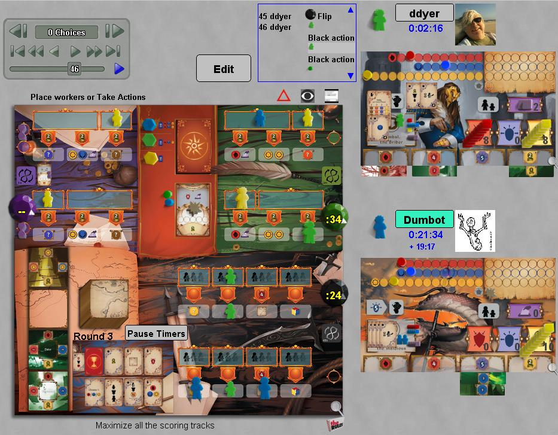

Pendulum
Pendulum is a very unusual table top game, where most of the action
happens without turns. Stripped of the realtime
aspects, it would be a fairly standard engine building, worker
placement game, where the main action is not against other players, but
to use workers effeciently to move toward victory.
With the timers, the problem is sequencing actions "get money
before you spend it" expands to make time an active element in the
planning process. You have to get money, but you can't get it
now, you can get it 30 seconds from now....
Read the official rules here, and some notes on this implementation here.
Robots: To be determined. They at least work
credibly toward victory.
|

|